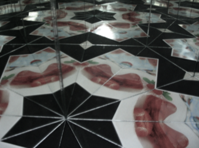
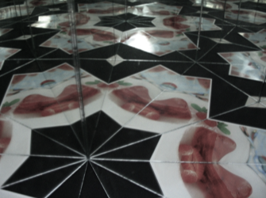
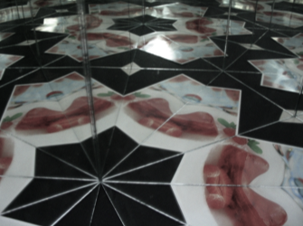

Her iki ayna arasındaki açı 180°’nin bir böleni olacak şekilde üç aynayı da ayarlamak mümkün. Üstelik üç ayna da bir nesne düzlemine (masaya) dik yerleştirilmişse ortaya tam olarak üç olasılık çıkıyor:
(60°, 60°, 60°), (90°, 45°, 45°), (90°, 60°, 30°)
Olası durumların böyle olmasının nedeni üçgenin iç açıları toplamının 180° olmasıdır. Böyle bir kaleydoskop boşluk bırakmadan tüm düzlemi dolduran desenler oluşturur. Sağdaki simülasyonda böyle bir yansıma deseni oluşturup gözlemleyebilirsiniz. Büyük sürgüyle oynayarak resme eklenen ayna görüntülerinin sayısını kontrol edebilirsiniz. Ayrıca noktaları hareket ettirerek yansıyan nesnelerin ve kaleydoskopun konumunu da kontrol edebilirsiniz.
Daha ilerisini keşfetmek için: iPhone ve iPad cihazları için hazırlanmış iOrnament programında yansımalar ve kaleydoskopa ilişkin daha çok açıklama bulabilir, kendi desenlerinizi yaratabilirsiniz.
Bağlantı: www.science-to-touch.com/iOrnament
|

|
Gerçek kaleydoskopların içine bir bakış.